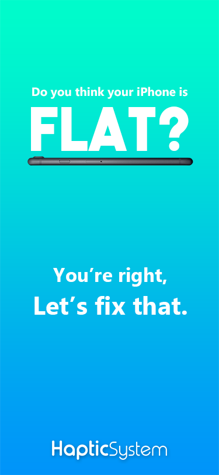
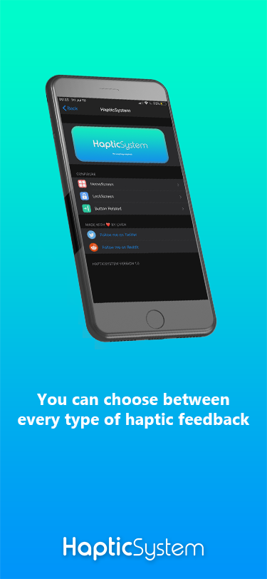
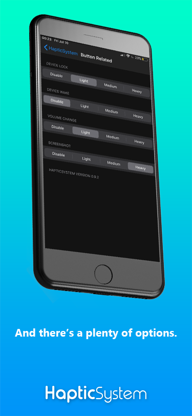

It's my first tweak that really came on a repo! Of course it is not really complicated but when you need a tweak to do that, it's cool :)
If you did not understood by the title, this tweak is allowing users to hide their dock background or precisely its opacity.
You can get it on the Twickd repo: https://repo.twickd.com (Tweak page)


This is a theme is never released, might (a day) rework on it and release it.
Basically, it is a theme that changes every icon to a Burger King icon with the "Burger King" text changed to the app name
It is close to be released, I only have to finish the Calendar icon (but for that I have to create a font idk for now because the day and date aren't static).
For now, no screenshots!
Ouuu, this is HOT, real HOT, but It's a secret :) I can only tell you that it's free, and it's a BIG BOI, stay tuned!
eta s0n
It's a desktop app that I made on Java and C#, it's only made for my personal use BUT it's open source, so you can modify it to make it YOURS :) (The Java one has a GUI but it's not stable and the C# is only a Console/Terminal app, I started to work on a C# GUI but never finshed it because the console one is okay for me.)
What does it do ? It's real simple but it can be useful if you have to switch between personal hotspot and your network a lot, for instance
It disables and enables your interfaces to make you switch from network A to network B.
This can be a very big app but I only made it so it responds to what I want it to do
Might make a configurable public version, but it would be more on C#. A BIG hot one.


I will never release this one on a big repo, why ? Just found out that it has already been made. Check Litten's Rose tweak on her repo: https://repo.litten.love
Everything was made so I can release it s0n but no, I even made a video about it! (It's an old build but here it is!), if you still want it: Yes! I will give you the .deb, just ask me on @LivenOff !
This is still WIP, check back later!
Please select a category, it's cold out there.